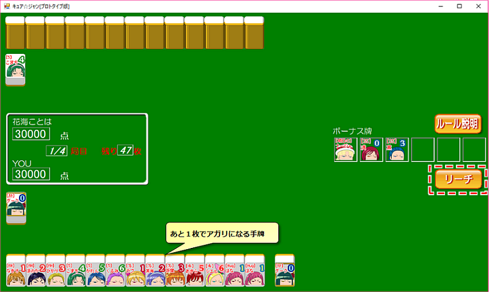
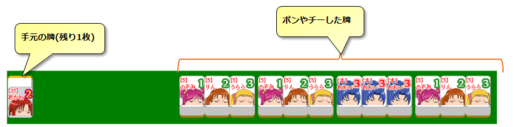

6.リーチ
リーチとは？
あと一枚で上がれる状態になったとき、リーチをする（「リーチ」ボタンを押す）ことで、あがったときに「リーチ」の役をつけることができます。

リーチはキュアジャンの役の中でも特に重要よ。リーチを制するものがキュアジャンを制すといっても過言じゃないわ！

リーチってビンゴゲームとかで「あと一つ穴が開けば景品がもらえる！」っていうときに言う、あの「リーチ」のこと？
意味としては同じね。「あと1枚牌がくれば、アガリ形にできる」という時に、「私はあと1枚で上がれる状態になりました！」と対戦相手に対して宣言するのがリーチよ。
当然、リーチをかけたプレイヤーに対し、対戦相手は上がられないように警戒してくるから、リーチをかける事で上がりにくくなるリスクがあるけれど、その分上がった時の得点が高くなるのよ。
当然、リーチをかけたプレイヤーに対し、対戦相手は上がられないように警戒してくるから、リーチをかける事で上がりにくくなるリスクがあるけれど、その分上がった時の得点が高くなるのよ。
リーチができる条件
下記の2つの条件が全て満たされているとき、リーチをする事ができます。
- 自分の手番で、あと1枚必要な牌がくれば上がり形になっている
- 手作りの途中で、ポン・チーをしていない
ポンとチーは、前回教わったやつだね！
そっかー、あのとき、ポン・チーはよく考えてしないといけないってリコが言ってたのは、こういうデメリットもあるからなんだね。
そう！その通り！
ポン・チーをすると早く手を揃えることができるけど、何か役がつく見込みもないのにポン・チーしまくっていると、アガリ形にはなったけど役がなにもなくて上がれないという悲惨な状態になることもあるから要注意よ！
ポン・チーをすると早く手を揃えることができるけど、何か役がつく見込みもないのにポン・チーしまくっていると、アガリ形にはなったけど役がなにもなくて上がれないという悲惨な状態になることもあるから要注意よ！
ポンやチーをしてしまったために、上がれなくなった手牌の例。
下図の手牌は、 がくれば上がれそうに見えるが、実際は何も役がつかないために上がることができない。
がくれば上がれそうに見えるが、実際は何も役がつかないために上がることができない。何故かというと、「●●[作品名]全員集合!」、「オール●●[作品名]」、「オール●●[色名]キュア」などの役は成立していないし、チーをしているからツモあがり(相手の捨て牌を使わず、自分のツモだけで上がる）の役も成立せず、さらに、チーしているからリーチもできない。
すなわち、成立する可能性のある役が一つもない状態になっているため、上がれないということになります。 
あ～、確かにそれは悲しいなあ･･･
逆にいえば、ポン・チーをせずに手牌を揃えて、リーチをかければ最低「リーチ」の役があるから「役が無くて上がれない」状態にはならないわ。
初心者のうちは、ポン・チーはしないで自分で手を揃えて、「リーチ」をして上がることをお勧めするわ。
初心者のうちは、ポン・チーはしないで自分で手を揃えて、「リーチ」をして上がることをお勧めするわ。
リーチした後の処理
リーチをすると、ツモった牌を手元の牌と入れ替えることはできなくなるわ。言い換えると「リーチ後に引いてきた牌は、そのまま捨てるか、それを加えてアガリを宣言するか、どちらかしかできなくなる」ということよ。
※ リーチした後、アガリ牌以外を引いた場合は自動で牌を捨てるモードになります。アガリ牌を引いてきたときだけ「上がるか、パスする(上がらずにゲームを続ける)か」をプレイヤーに選ばせます。
※ リーチした後、アガリ牌以外を引いた場合は自動で牌を捨てるモードになります。アガリ牌を引いてきたときだけ「上がるか、パスする(上がらずにゲームを続ける)か」をプレイヤーに選ばせます。
え～、リーチした後で「もっといい役ができそうだから、今ツモった牌を手牌に加えて、やっぱり別の手を目指します～」っていうのはダメなの？
ダメです！リーチはあくまで「あと1枚で上がれる状態になりました。私はこの手で上がります」という宣言だから、リーチ後に別の手を目指すのはナシよ。
まあ、そういうリスクがあるからこそ、「リーチ」して上がれば1000点という得点がついてくるのよ。
まあ、そういうリスクがあるからこそ、「リーチ」して上がれば1000点という得点がついてくるのよ。
[6/9]